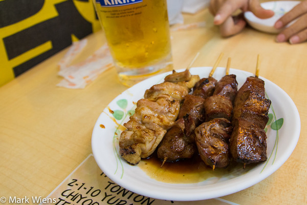
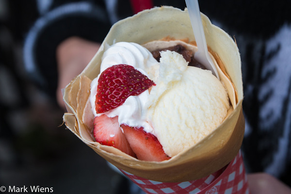

Takoyaki (たこ焼き)
Prijs: Ongeveer 260 - 600 JPY voor 6 Takoyaki balletjes.
Taiyaki (鯛焼き visvormige waffels)
Prijs: Ongeveer 120-150 JPY.
Yakitori (焼き鳥)
Prijs: Ongeveer 150-200 JPY.
Mitarashi dango (みたらし団子)
Prijs: 110 JPY.
Zoet brood
Prijs: 170 JPY.
Japanse pannenkoek
Prijs: 450 JPY.